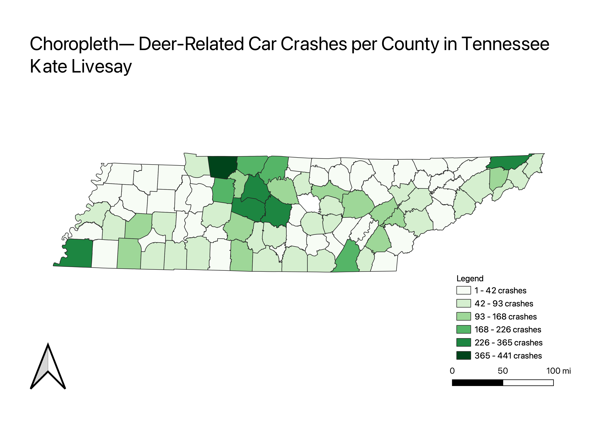
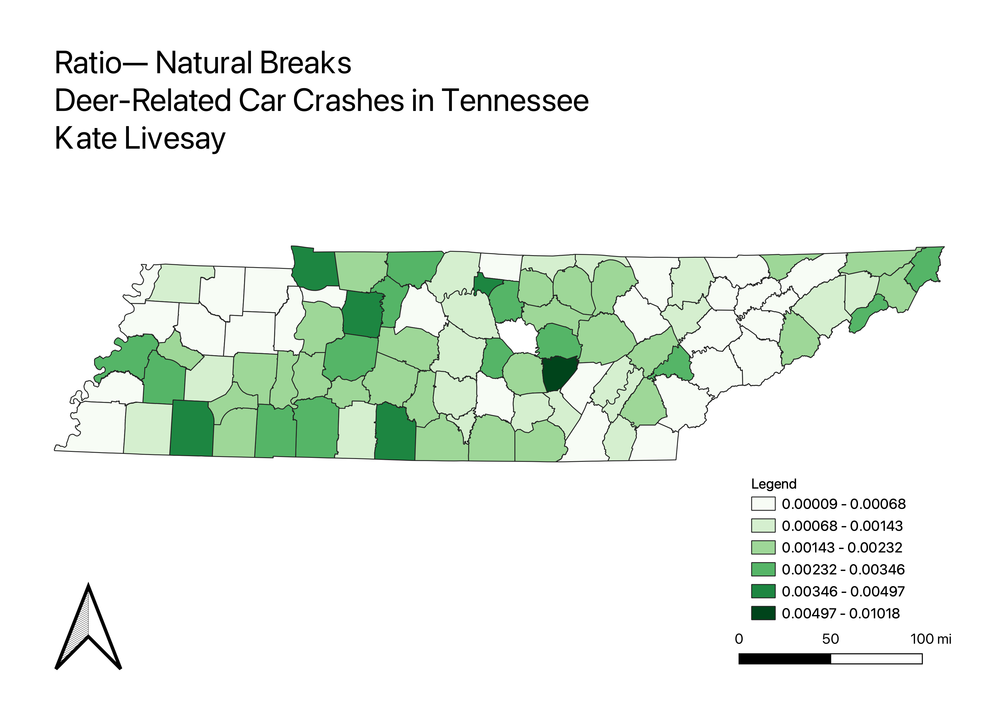

Homework 7: Choropleth and Proportional Symbol Maps
Kate Livesay
I chose to look at car crashes in the state of Tennessee that involved deers. I found local data that included the number of car crashes per county that involved deers. This topic is interesting because it shows how deer-related incidents are significant even in areas where deers aren't super prevalent, such as bigger city areas. At the bottom, an interactive map in included.
Choropleth
This choropleth shows how a lot of deer realted car accients during 2015 occured near Nashville, TN, toward the north of the state. This makes sense becuase Nashville is the largest city in Tennessee, hence why most of the data would be centered around that city. There are less deer related car accidents in counties that are more rural, yet every Tennessee county has reported at least one deer-crash during the year of 2015.

Ratio: Natural Breaks
For this ratio map, I divided the number of deer accidents during the year of 2015 by the total population of that county in 2015. Unlike the choropleth that shows most of the deer accidents toward the north of the state, this ratio map reveals how a lot of the deer accidents occured in more rural parts of Tennessee, such as counties such as Van Buren (which had some of the greatest deer related accidents).

Link to interactive map!
Interactive Map
Data used for this project
Cleaned CSV dataset
Data source for deer-related crashes
Link to TN county geography
Vector GeoJSON